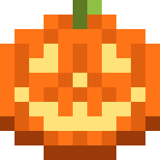

Ustawienia
Pamięć, okno gry, wygląd launchera i Java. Zmiany zapisują się od razu.
Wydajność
Pamięć RAM dla gryTwój komputer ma 16 GB. Nore Client dobrze działa z 4 GB.
Pobieranie równoległeIle plików pobierać naraz przy instalacji modów.
Po uruchomieniu gryCo zrobić z oknem launchera.
UkryjZostawZamknij
Java
Ścieżka do JavyPuste: launcher sam pobierze właściwą wersję od Mojang.
Automatycznie · Java 21

Wydarzenia są zawsze włączone. Halloween trwa do 3 listopada, zima zacznie się sama 10 grudnia.Wygląd
Kolor akcentuBarwi przycisk Graj, okładkę albumu i logo.
AnimacjeNaklejki, strony, wydarzenia.
PełneOszczędneWyłączone
Dźwięki interfejsuCiche kliknięcia przy naklejaniu i odklejaniu.
Okno gry
RozdzielczośćRozmiar okna przy starcie.
1600
×900
Pełny ekranUruchamiaj grę na całym ekranie.